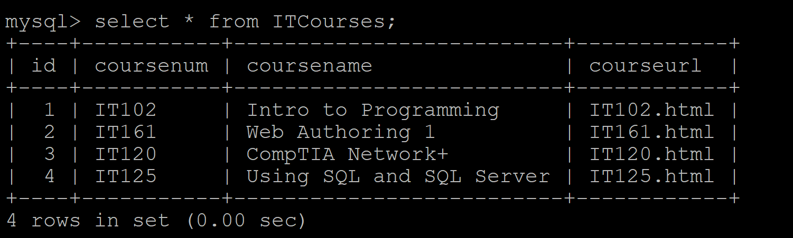

IT125 Using SQL and SQL Server
Demonstration Web Site
This course is about how to create and manage databases. The image below shows an example of a database.

You can test a live SQL database query at this location
Test Query